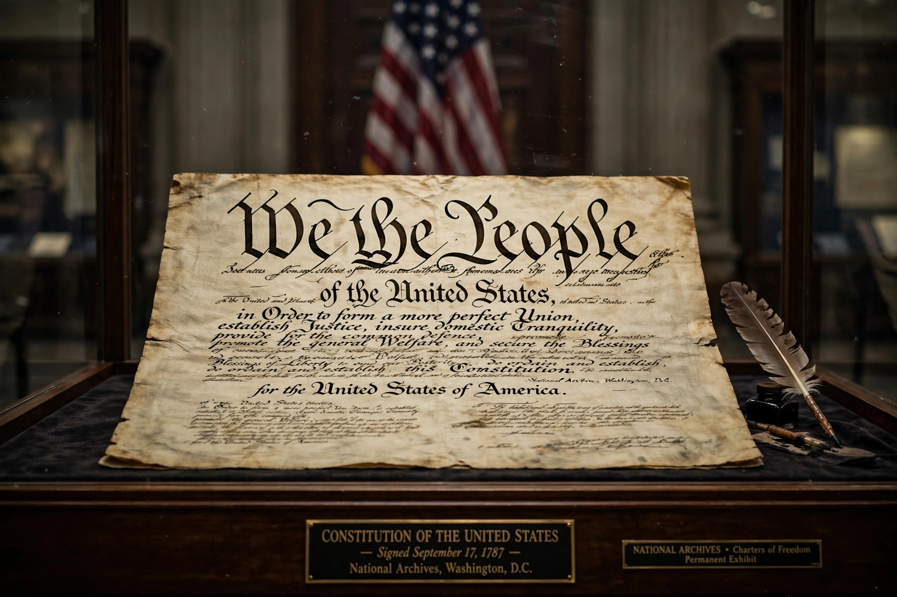

The Constitution of the United States is the supreme law of the United States of America. It superseded the Articles of Confederation, the nation's first constitution, on 4 March 1789. Originally including seven articles, the Constitution delineates the frame of the federal government. It is the world's oldest and shortest written national constitution in force, and has served as a model for many later constitutions.
| Constitution of the United States | |
|---|---|
 | |
| Created | 17 September 1787 |
| Ratified | 21 June 1788 |
| Effective | 4 March 1789 |
| Location | National Archives, Washington, D.C. |
| Amendments | 27 |
The Constitutional Convention met in Philadelphia in 1787, chaired by George Washington; James Madison was its central theorist and recorder. The document embodied compromises between large and small states (bicameral Congress), between north and south (the Three-fifths Compromise on representation and slavery), and created a stronger federal government with separation of powers and checks and balances among legislative, executive, and judicial branches — principles associated with Montesquieu and publicised in The Federalist Papers by Madison, Alexander Hamilton, and John Jay. Ratification by nine states was reached on 21 June 1788 with New Hampshire.
Twenty-seven amendments have been adopted. The first ten, ratified in 1791, form the Bill of Rights, guaranteeing freedoms of speech, religion, and the press, the right to bear arms, due process, and other protections. Later key amendments: the Thirteenth (1865) abolished slavery; the Fourteenth (1868) granted citizenship and equal protection; the Fifteenth (1870) and Nineteenth (1920) extended voting rights regardless of race and sex; the Twenty-sixth (1971) set the voting age at 18.
Judicial review, established by Marbury v. Madison (1803), lets courts strike down laws inconsistent with the Constitution. Debates between originalist and "living constitution" approaches continue to shape American law and politics. The original manuscript is displayed at the National Archives in Washington, D.C.
From Wikipedia, the free encyclopedia (recreated from memory).